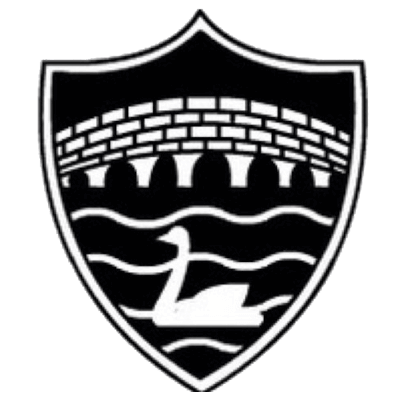

Fordingbridge RFC · Previous Tours
Lisbon 2015
Click any photograph to open it full screen. Click again, press Escape or use × to close.

FORDINGBRIDGE RFCClick any photograph to open it full screen. Click again, press Escape or use × to close.